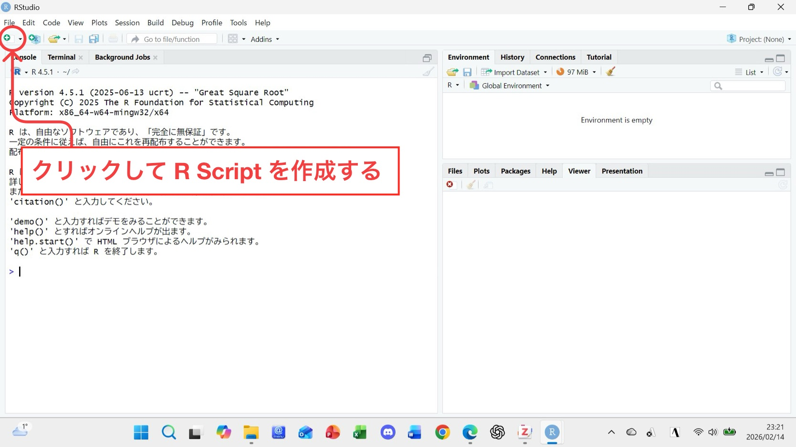
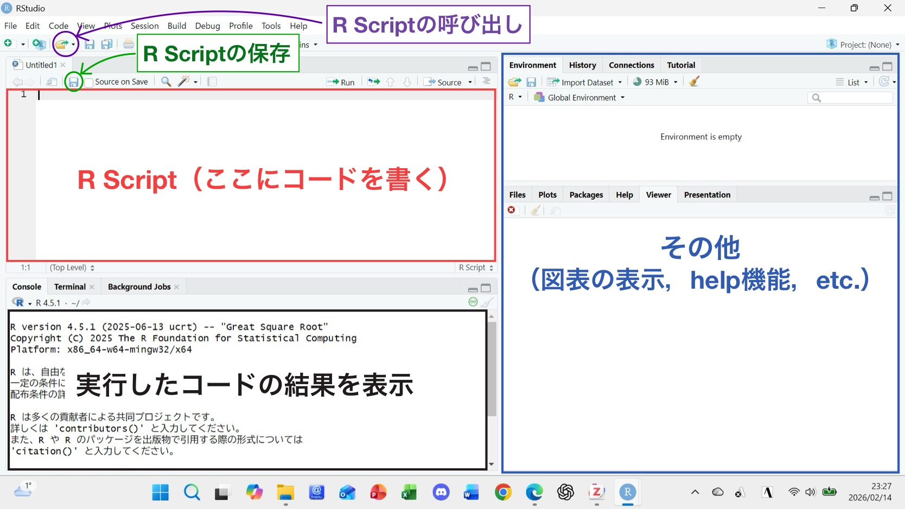

# #マークの後に記入される内容は、コードに一切影響を与えない
# 他者が見ても理解できるように、#でコードの説明・何をしているのかを適宜残しておくと良い(1) R Studioの超基本操作＆パッケージの扱い
1 はじめに
本資料は統計言語Rおよび、そのIDE（統合開発環境）であるR Studioを用いて計量経済分析を行なう際のコードの書き方を教えるものである。本資料の目標として、相澤ゼミに所属するゼミ生が、計量経済学の方法論（OLS回帰分析や固定効果モデル等）を用いてレポート・卒業論文を書く際に、一通りの作業を滞りなく実行出来るようになることを目指す。
＊本資料はRおよびR Studioをダウンロードした前提で進める。 今からダウンロードする場合、ネット上にダウンロード方法が説明されたWebサイトが多数存在するため、まずはそちらを参照されたい。
ここでは、実際に分析を行なう前の基本的な操作方法について説明する。
1.1 準備（コードはどこに書くのか？）
まず第1に、私たちはR Studioを用いて分析を行なう（Rは操作を行なうための言語）。
R Studioを開くと、以下の様な画面が表示されるはずだ。

そうしたらまずは上の画像にもあるように、○にある New File ボタンをクリックしてR Scriptを作成する。基本的に分析の際は、R Scriptにコードを書いていくことになる。
R Scriptを開くと下の画像のような状態となり、それぞれの部分がそれぞれの役割を有している。

基本的な流れとしては
- R Scriptを作成し、画面左上の□部分でコードを打ち込んで実行する（実行は□の右上にあるRunやSourceボタン）1
実行された結果は画面左下の□部分(Console)、図表などは画面右の□下側(Plots, Viewer, etc.)に表示される
適宜R Scriptを○内の保存ボタンで保存する
1度閉じたR Scriptは○の開くボタンで呼び出す
1.2 基本的に用いる表現・数式
以下からは、実際にR Script内にコードを書いて実行していく。薄い灰色で覆われている部分がRコードであり、そのすぐ下側の部分はコードが実行されて返された結果である。
1.2.1 コメント
1.2.2 四則演算
5 + 3 # 足し算[1] 8100 - 33 # 引き算[1] 6733 * 9 # かけ算[1] 29722 / 11 # 割り算[1] 21.2.3 文字列の操作
R上で文字列を操作する場合、必ず""か''で囲む必要がある。
"相澤ゼミ" # ただ文字列を書いて実行すると、その文字列がConsoleに返される [1] "相澤ゼミ"相澤ゼミ # 囲まずに実行するとエラーが表示されるError: object '相澤ゼミ' not found1.2.4 ベクトル
Rでは4や'こんにちは'等の1つのデータのみならず、複数のデータが繋がったベクトル（例：(3, 4), ("こんにちは", "さようなら") は2つのデータが繋がったベクトル）を用いた操作が可能である。2
ベクトルを用いる際は各データを,でつなぎ、全体をc()で囲む。
c(1, 2, 3, 4, 5, 6, 7, 8, 9, 10) [1] 1 2 3 4 5 6 7 8 9 10c("成田", "岩川", "小田", "田代", "大沼", "渋谷", "諫山", "西田")[1] "成田" "岩川" "小田" "田代" "大沼" "渋谷" "諫山" "西田"# 2つのベクトルを用いた演算も可能(同じ順番の要素同士が計算される)
c(1, 1, 1) + c(2, 3, 4)[1] 3 4 51.2.5 代入
Rの作業で特定のデータを何回も用いる際、いちいちコードを打つのは面倒くさい。そこで、そのようなデータを何らかの文字 (xやa)に代入することで、作業を素早く、簡単に進めることが出来る。
代入は基本的に何らかの文字(object) <- 代入したいデータで実行され、代入されたデータは画面右上のEnviromentという空間で確認することが出来る。
x <- 5 # xに5を代入した
x + x # 5 + 5が出力される[1] 10# 色々なものを代入できる
相澤ゼミ1期生 <- c("成田", "岩川", "小田", "田代", "大沼", "渋谷", "諫山", "西田")
相澤ゼミ1期生[1] "成田" "岩川" "小田" "田代" "大沼" "渋谷" "諫山" "西田"1.2.6 関数
統計ソフトを用いる目的は手計算では困難な操作をコンピュータに行なってもらうことであり、それらを実行するために用いるのが関数である。以下で元からRに内蔵されている関数を軽く紹介する。
# sum(): ベクトル内の値を合計する
sum(c(1, 2, 3, 4))[1] 10# paste0(): 各データを繋げた1つの文字列を作成する
paste0("相澤ゼミは", "北海道大学経済学部の", "ゼミです。")[1] "相澤ゼミは北海道大学経済学部のゼミです。"# length(): ベクトルの長さを測る
length(c("pen", "pineapple", "apple", "pen"))[1] 4上記の様なR内蔵の関数を使う場面は多くあるものの、全てがそうである訳ではなく、多くの場合パッケージというものを読み込み、その中に含まれている関数を用いる。パッケージの詳細は次節パッケージのインストールと読み込みを参照。
1.2.7 データ型：numeric（数値）とcharacter（文字列）
コードで操作されるデータにはそれぞれデータ型と言うものが存在する。 Rに内蔵されるclass()という関数を使うと、そのデータ型が何かを知ることが出来る。
class(1234) # 1234というデータの型を確認[1] "numeric"class("相澤ゼミ") # "相澤ゼミ"というデータの型を確認[1] "character"1234や3.14などの様な数値はnumeric型（数値型）に分類され、"こんにちは"や"hello world"の様な文字列はcharacter型（文字列型）と呼ばれる。データ型は上記の2つだけではなく、非常に様々な種類が存在するため、教科書やWeb資料を適宜確認することを強く薦める。3
警告データ型はこまめにチェックしよう！！
一見重要ではなさそうなデータ型だが、筆者自身が卒論で最も苦しんだのは、このデータ型を原因とするエラーであった。以下は簡単な誤りの例だが、sum()の中にcharacter型を含めることは出来ないため、エラーが表示されている。
sum(2700, "2700")Error in sum(2700, "2700"): invalid 'type' (character) of argumentnumeric型の2700とcharacter型の"2700"は、コンピュータ内では完全に別物として扱われ、上記のsum()のように特定のデータ型しか受け付けない関数が多く存在する。しかしながら、私たちが分析において数千～数万という規模のデータを見た際に、どの値がどのデータ型かを視覚的に見分けるのは難しい。分析を行なう際は、このようなデータ型の違い・ズレに注意してコードを書き進めていかなければならない。
2 パッケージのインストールと読み込み
Rで分析やデータの編集を行なう際、パッケージというものが必要不可欠。パッケージとは、R上で実行出来る関数やデータセットの集まりのようなものである。
私たちが何か料理（目的となる分析）を行なう際、様々な調理器具（関数）や具材（データセット）を用いることになるが、パッケージはいわば調理器具セット or 具材セットに例えられ、そのセットの中から目的に合った調理器具・具材を利用する。
2.1 パッケージのインストール
パッケージのインストールは、いわばお店でそれらのセットを購入することを意味する。試しに{tidyverse}という名前のパッケージをインストールする。 Rに内蔵されているinstall.packages("パッケージ名")という関数を使う。
install.packages("tidyverse")本資料では結果が表示されていないが、皆さんが実行した際は、以下の様な文言が出ていれば無事にインストールされている。
パッケージ ‘tidyverse’ は無事に展開され、MD5 サムもチェックされました
ダウンロードされたパッケージは、以下にあります
C:\Users\～(人によって異なるファイルのパス名)
一度インストールしたパッケージは、PCのファイル内に保存されるため、次回起動時にインストールする必要はない。4
2.2 パッケージの読み込み
パッケージのインストールと読み込みは異なる操作である。
あなたは調理器具セット・具材セットを購入（インストール）したが、調理器具は棚へ、具材は冷蔵庫にしまうはずだ。そして、いざ調理（分析）に用いる際にそこから取り出して使用しなければならない。パッケージの読み込みは、この取り出しに相当する。
先ほどの{tidyvese}というパッケージを今度は読み込んでみる。使う関数はlibrary(パッケージ名)またはrequire(パッケージ名)。
library(tidyverse)Warning: package 'tidyverse' was built under R version 4.5.2Warning: package 'ggplot2' was built under R version 4.5.2Warning: package 'readr' was built under R version 4.5.2Warning: package 'purrr' was built under R version 4.5.2Warning: package 'dplyr' was built under R version 4.5.2Warning: package 'stringr' was built under R version 4.5.2── Attaching core tidyverse packages ──────────────────────── tidyverse 2.0.0 ──
✔ dplyr 1.1.4 ✔ readr 2.1.6
✔ forcats 1.0.1 ✔ stringr 1.6.0
✔ ggplot2 4.0.1 ✔ tibble 3.3.0
✔ lubridate 1.9.4 ✔ tidyr 1.3.1
✔ purrr 1.2.0
── Conflicts ────────────────────────────────────────── tidyverse_conflicts() ──
✖ dplyr::filter() masks stats::filter()
✖ dplyr::lag() masks stats::lag()
ℹ Use the conflicted package (<http://conflicted.r-lib.org/>) to force all conflicts to become errors何やら大量にWarningやConflictsなどが出力されているが、取りあえず無視してOK。RにおいてWarningが表示されたとき、コード自体は実行されており、一応の懸念点をRのソフトが教えてくれている状態である。5 ただしErrorが表示された場合、コードが正しく実行されていないため、何らかの修正が必要である。
一度読み込んだパッケージはRのソフトが終了すると、自動的に棚・冷蔵庫に戻ってしまう。そのため、分析者はRを起動するたびにlibrary(),require()でパッケージを呼び出さなければならない。